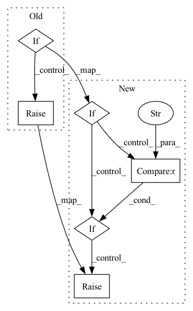

Pattern ID :1315

Before Change
return E
elif self.out_format == "yE":
return torch.cat((y, E), dim=-1)
elif self.out_format == "y,E":
return y, E
else:
raise RuntimeError
After Change
return torch.cat((y, E), dim=-1)
elif self.out_format == "yc":
return torch.cat((y, c), dim=-1)
elif self.out_format == "y,E":
return y, E
elif self.out_format == "y,c":
return y, c
else:
raise RuntimeError
In pattern: SUPERPATTERN
Frequency: 3
Non-data size: 6
Instances
Fragment ID: 4566165
Project Name: sp-nitech/diffsptk
Commit Name: 51a1d802182ec00d6012ab0800d1e3a3605e7cb0
Time: 2022-03-24
Author: takenori.yoshimura24@gmail.com
File Name: diffsptk/core/mfcc.py
M Class Name: MelFrequencyCepstralCoefficientsAnalysis
N Class Name: MelFrequencyCepstralCoefficientsAnalysis
M Method Name: forward(2)
N Method Name: forward(2)
M Parent Class: nn.Module
N Parent Class: nn.Module
M File Name: diffsptk/core/mfcc.py
N File Name: diffsptk/core/mfcc.py
M Start Line: 118
M End Line: 130
N Start Line: 121
N End Line: 136
'>
Before Change
return values.min(dim=0)
elif reduction == "max":
return values.max(dim=0)
elif reduction == "mean":
return values.mean(dim=0)
else:
raise ValueError
def compute_td(self, obs_t, act_t, rew_tp1, q_tp1, gamma=0.99):
tds = []
After Change
values.append(q_func(x, action).view(1, x.shape[0], 1))
values = torch.cat(values, dim=0)
if reduction == "min":
return values.min(dim=0).values
elif reduction == "max":
return values.max(dim=0).values
elif reduction == "mean":
return values.mean(dim=0)
elif reduction == "none":
return values
else:
raise ValueError
def compute_td(self, obs_t, act_t, rew_tp1, q_tp1, gamma=0.99):
td_sum = 0.0
'>
Fragment ID: 4566160
Project Name: takuseno/d3rlpy
Commit Name: 849c88ed45b267f4edf3456afa3746a7cef41a5f
Time: 2020-06-17
Author: takuma.seno@gmail.com
File Name: skbrl/models/torch/q_functions.py
M Class Name: EnsembleContinuousQFunction
N Class Name: EnsembleContinuousQFunction
M Method Name: forward(4)
N Method Name: forward(4)
M Parent Class: nn.Module
N Parent Class: nn.Module
M File Name: skbrl/models/torch/q_functions.py
N File Name: skbrl/models/torch/q_functions.py
M Start Line: 84
M End Line: 96
N Start Line: 82
N End Line: 96
'>
Before Change
if sample_mod == "vote":
// use fps in vote_aggregation
sample_indices = None
elif sample_mod == "seed":
// FPS on seed and choose the votes corresponding to the seeds
sample_indices = furthest_point_sample(seed_points,
self.num_proposal)
elif sample_mod == "random":
// Random sampling from the votes
batch_size, num_seed = seed_points.shape[:2]
sample_indices = seed_points.new_tensor(
torch.randint(0, num_seed, (batch_size, self.num_proposal)),
dtype=torch.int32)
else:
raise NotImplementedError(
f"Sample mode {sample_mod} is not supported!")
vote_aggregation_ret = self.vote_aggregation(vote_points,
After Change
vote_offset=vote_offset)
// 2. aggregate vote_points
if sample_mod == "vote":
// use fps in vote_aggregation
aggregation_inputs = dict(
points_xyz=vote_points, features=vote_features)
elif sample_mod == "seed":
// FPS on seed and choose the votes corresponding to the seeds
sample_indices = furthest_point_sample(seed_points,
self.num_proposal)
aggregation_inputs = dict(
points_xyz=vote_points,
features=vote_features,
indices=sample_indices)
elif sample_mod == "random":
// Random sampling from the votes
batch_size, num_seed = seed_points.shape[:2]
sample_indices = seed_points.new_tensor(
torch.randint(0, num_seed, (batch_size, self.num_proposal)),
dtype=torch.int32)
aggregation_inputs = dict(
points_xyz=vote_points,
features=vote_features,
indices=sample_indices)
elif sample_mod == "spec":
// Specify the new center in vote_aggregation
aggregation_inputs = dict(
points_xyz=seed_points,
features=seed_features,
target_xyz=vote_points)
else:
raise NotImplementedError(
f"Sample mode {sample_mod} is not supported!")
vote_aggregation_ret = self.vote_aggregation(**aggregation_inputs)
'>
Fragment ID: 4566173
Project Name: open-mmlab/mmdetection3d
Commit Name: 460f6b3bf2320ceddeba58054c122836af2e6872
Time: 2020-09-13
Author: zhoujiaming@sensetime.com
File Name: mmdet3d/models/dense_heads/vote_head.py
M Class Name: VoteHead
N Class Name: VoteHead
M Method Name: forward(3)
N Method Name: forward(3)
M Parent Class: nn.Module
N Parent Class: nn.Module
M File Name: mmdet3d/models/dense_heads/vote_head.py
N File Name: mmdet3d/models/dense_heads/vote_head.py
M Start Line: 132
M End Line: 172
N Start Line: 142
N End Line: 200